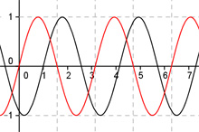

Aufgabe 246 Bestimmen Sie b und c für den dargestellten Graphen der Form y = a * sin (b * (x + c)) + d.  Abgelesen: Periode = п (von 1- 4,14) --> 2п |b| = ---- = 2 п Keine Spiegelung an der x-Achse --> b = 2 asin2(x + c) + d Abgelesen: |a| = 1 --> Keine Spiegelung an der x-Achse --> a = 1 sin(2(x + c)) + d. Abgelesen: Keine Verschiebung entlang der y-Achse --> d = 0 sin(2(x + c)) Abgelesen: Verschiebung entlang der x-Achse um 1 nach rechts --> c = -1 --> y = sin(2(x - 1)) Zum Vergleich: sin(2x)